Mobile Robot
ROS packages coordinate robot bringup, TF, motors, lidar, web connection, and the display workflow.
Ansan Mascot Promotional Robot
ROS-Based HRI System for Public Events
Hanyang University PlanR
(Hongdo: mobile mascot robot for visitor interaction and AI photo transformation)
The system combines ROS bringup, motor control, perception, obstacle sensing, a browser-based robot display, and AI image conversion. Hongdo was deployed at four public festivals, starting with Ansan Everyone's Playground Festival (안산 모두의 놀이터 축제); this page highlights the second deployment, Ansan Youth Day Festival, where visitors interacted with the robot through the event UI.
ROS packages coordinate robot bringup, TF, motors, lidar, web connection, and the display workflow.
Human detection and obstacle modules support event-space approach behavior and safe movement.
The web interface guides photo capture, style selection, image conversion, and result sharing.
Hongdo is organized as a ROS workspace. The NUC-side packages handle bringup, web integration, teleoperation, TF broadcasting, obstacle sensing, and robot description. The web layer is served from Node.js and connects the robot display to the ROS workflow.
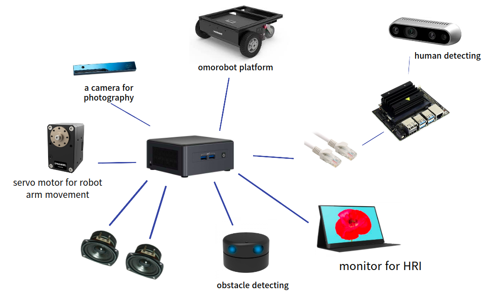
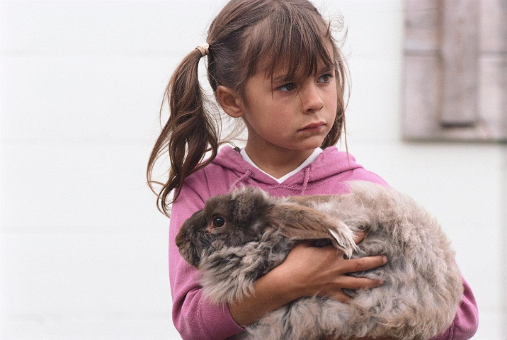
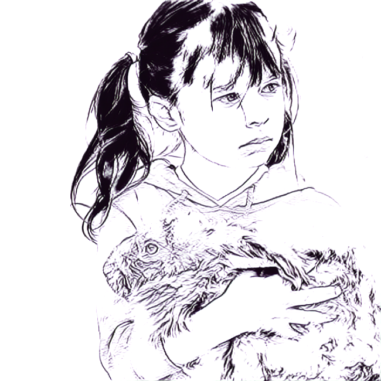
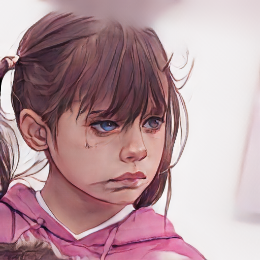
The conversion flow references open-source image translation and sketch-generation projects, then wraps those outputs in a robot-facing event interaction. The visitor sees a continuous experience: capture, select, convert, and receive.
Hongdo was deployed at four public festivals. The records below are organized by deployment so each festival can carry its own media, venue context, and field notes.
Festival 01
Hongdo's first public deployment introduced the mascot robot form and a camera-linked booth workflow.
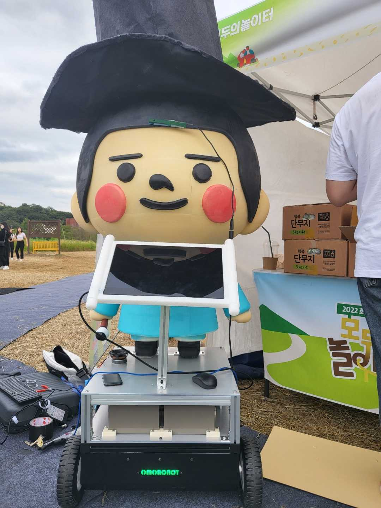
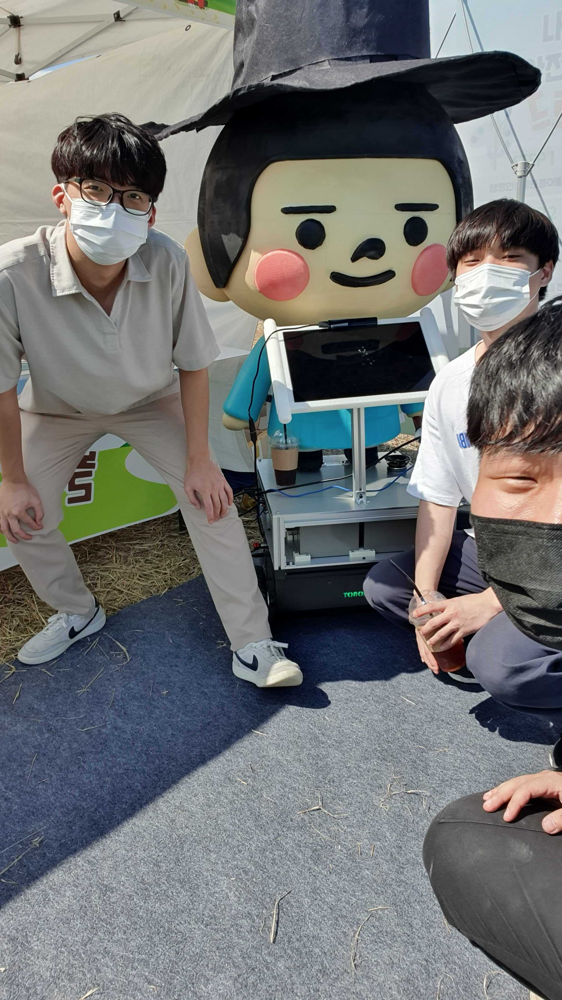
Festival 02
The second deployment added navigation behavior for live visitor-space interaction.
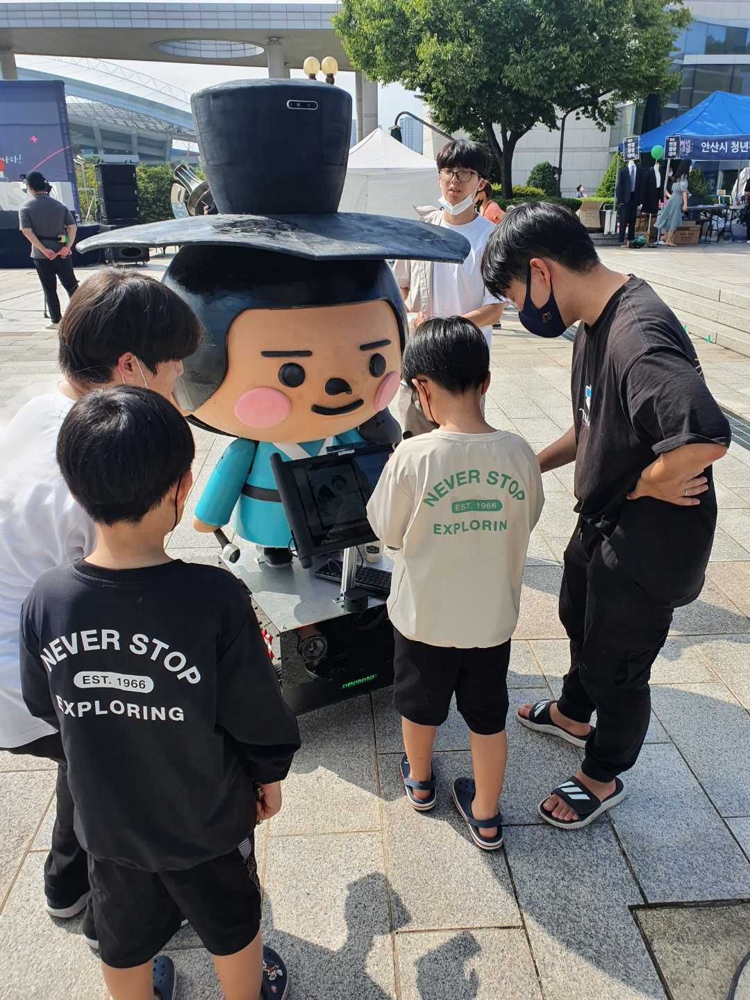
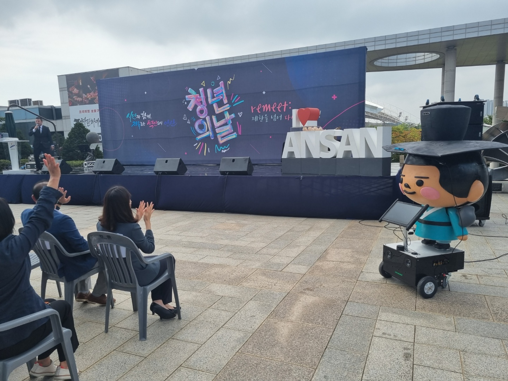
Festival 03
The third deployment extended the public interaction workflow with AI output and physical expression.
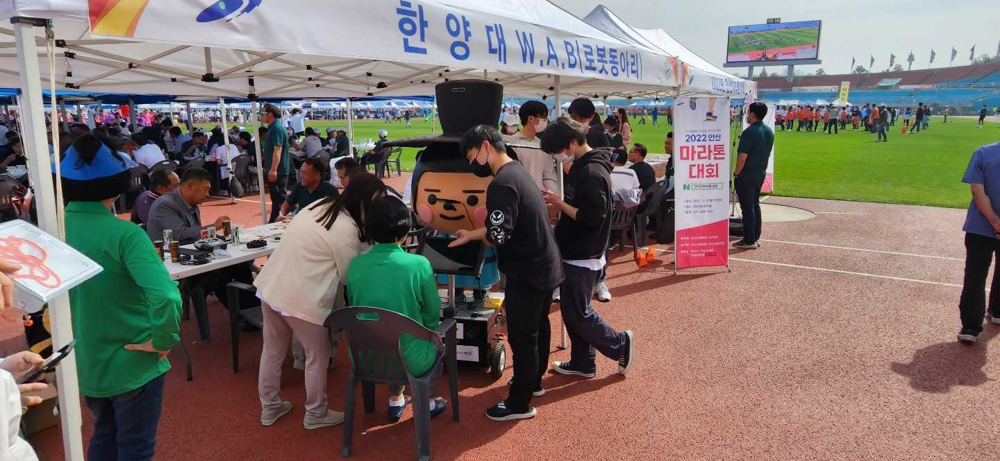
Festival 04
The fourth deployment validated the complete system in a dedicated public festival environment.
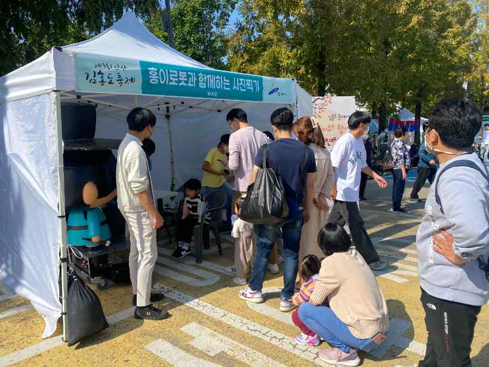
Fabrication, mascot design, and field debugging are collected separately from the festival-by-festival deployment record.
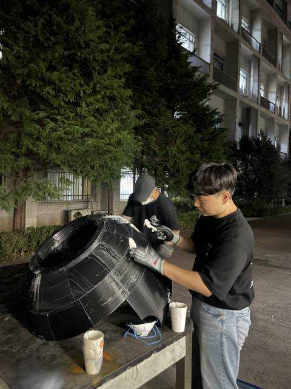
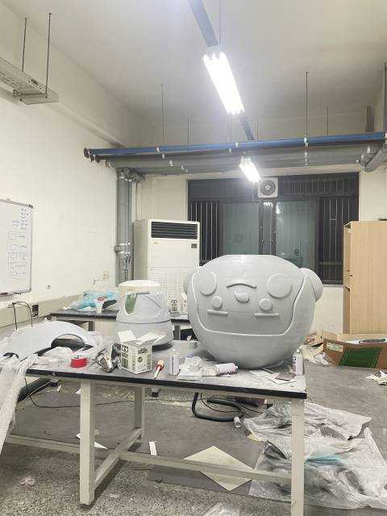
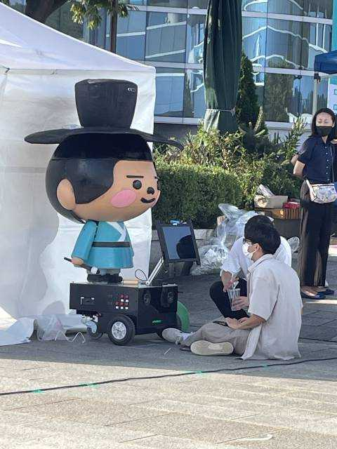
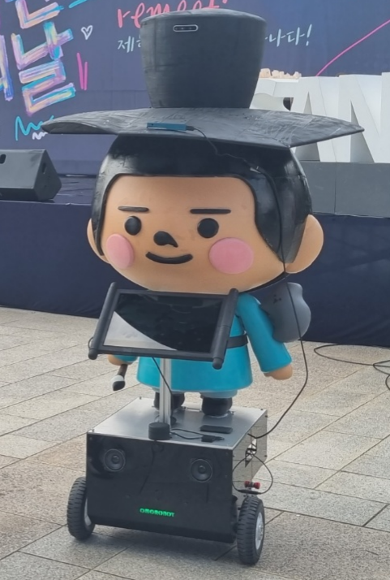